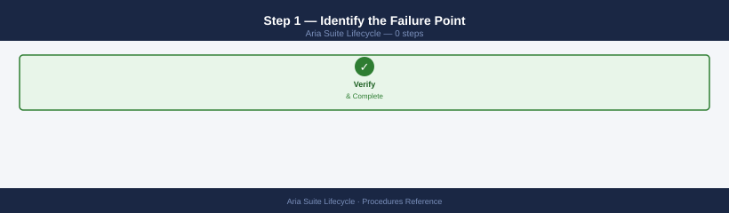
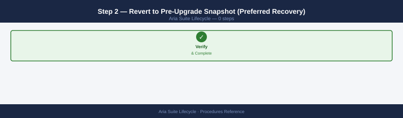
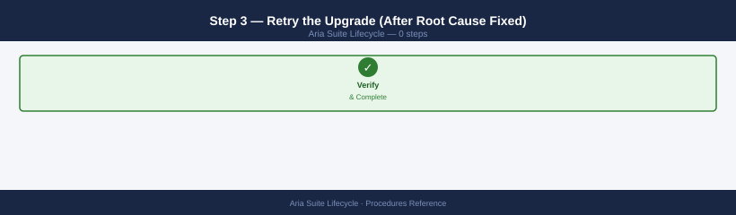
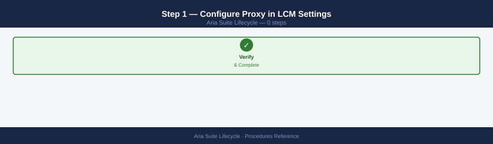
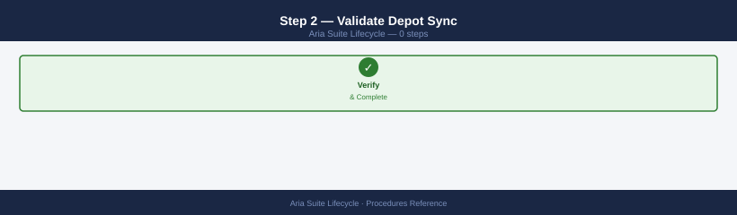
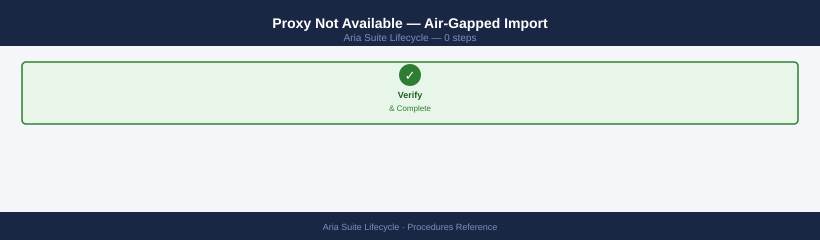
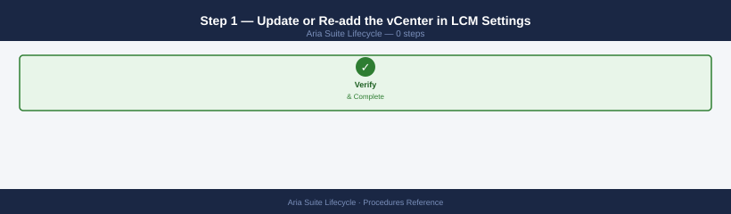
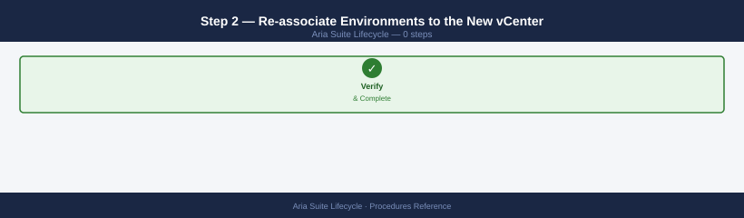
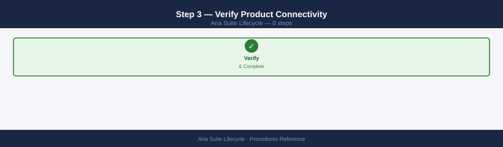

Aria Suite Lifecycle — Procedures¶
Before you begin¶
- Access: vCenter read-only minimum; Administrator role for remediation steps
- Timing: safe to run during business hours unless a step is marked ⚠ (causes interruption)
- Dependencies: no active upgrades or migrations on the same infrastructure
- Logging: capture command output — paste into the change record on completion
Rotate a Password in Locker¶
When a service account password is changed at source (vCenter, AD, database):
- LCM → Locker → Passwords → locate the alias for the changed credential
- Click Edit → update the password value
- Navigate to all products that use this credential and re-validate their connections
- For vCenter-linked credentials: LCM → Settings → vCenter Server → edit → re-validate
Add a vCenter Server to LCM¶
Provide:
- vCenter FQDN (must be resolvable from LCM appliance)
- Username: svc-lcm@vsphere.local (dedicated service account — not administrator@vsphere.local)
- Password (stored in Locker automatically)
- Accept the vCenter SSL thumbprint
Required vCenter permissions for the LCM service account:
| Permission | Scope |
|---|---|
| Virtual Machine — Create New | Datacenter |
| Virtual Machine — Power | All VMs |
| Datastore — Allocate Space | Target datastores |
| Network — Assign Network | Target port groups |
| Host — CIM Interaction | All hosts |
| Global — Cancel Task | Global |
Content Migration Between Environments¶
When promoting content (dashboards, blueprints, templates) from a lower environment (Dev) to production via LCM Content Lifecycle Manager:
- LCM → Content Lifecycle Manager → select source environment
- Select content type: Aria Operations dashboards / Aria Automation blueprints
- Click Extract — creates a content snapshot
- Navigate to the target environment → Deploy Content
- Select the extracted content snapshot and map any environment-specific variables (cloud account names, network profiles)
- Click Deploy — monitor via Requests
Register VIDM (Workspace ONE Access)¶
If VIDM was deployed separately (not via Easy Installer) or needs to be re-registered: Provide: - VIDM FQDN - Admin username and password - LCM then registers itself as a client in VIDM and configures SSO
All subsequently deployed Aria products automatically use the registered VIDM as their SSO source.
Decommission a Product from LCM¶
- Ensure the product has no active integrations (e.g., Aria Automation cloud accounts pointing to Aria Operations)
- LCM → Lifecycle Operations → Environments → product card → Delete
- LCM runs a pre-delete check and then powers off and deletes the product VMs from vCenter
- Remove the product's DNS records and IP address reservations from IPAM
- Archive the product's Locker credentials (do not delete until confirmed decommissioned)
Add a Product to an Existing Environment¶
- LCM → Lifecycle Operations → Environments → select the target environment
- Click Add Product → select the product and version from the Locker (binary must already be imported)
- Complete the product wizard: configure FQDN, IP addresses, sizing, and linked vCenter
- Submit — LCM deploys the product VMs to the target vCenter
- Monitor via Requests — each step shown with pass/fail status
- Post-deploy: validate product health via Environments → product card → Health Check
Scale Out an Existing Deployment (Add Node)¶
- LCM → Lifecycle Operations → Environments → select the product to scale
- Click Scale Out → select the node type: Replica (active-active) or Worker (processing node, product-dependent)
- Configure IP address, FQDN, and vCenter placement for the new node
- Submit — LCM deploys and joins the new node to the existing product cluster
- Monitor via Requests
- Post-deploy: validate cluster status — all nodes should show green in the product's own UI
Upgrade a Product via LCM¶
- LCM → Lifecycle Operations → Environments → product card → Upgrade
- Select the target version (must be available in the Locker — import binary first if not present)
- Click Run Precheck — LCM validates certificates, disk space, connectivity, and snapshot state
- Resolve any Precheck failures before proceeding (common: expired certificates, low disk space)
- Schedule the upgrade window — confirm outage impact with application teams
- Click Upgrade — monitor each phase via Requests
- Post-upgrade validation: product health check green, verify version in product UI, run smoke tests
Import a Product Binary to the Locker¶
- LCM → Locker → Product Binaries → Import
- Choose import method:
- My VMware Download URL — provide a direct download link (LCM downloads directly)
- Upload — upload a locally downloaded binary from the LCM UI
- LCM verifies the SHA-256 checksum after import — confirm the checksum matches VMware's published value
- Binary is now listed in the Locker and available for new deployments and upgrades
Rotate All Passwords for an Environment¶
External integrations using the rotated credentials will break immediately
LCM rotates passwords within the Aria product stack, but any external system that authenticates using these credentials — ITSM connectors, monitoring agents, custom ABX actions, CI/CD pipelines — will fail the moment the rotation completes. Before rotating, enumerate all external callers and prepare to update their stored credentials immediately after rotation. Step 6 is time-critical.
- LCM → Lifecycle Operations → Environments → select the environment
- Click Rotate Passwords → select scope: All Products (or select individual products)
- Confirm the operation — LCM generates new passwords and updates them across all product nodes
- Monitor via Requests — each product's password rotation shown as a subtask
- After completion: verify no service disruptions — check product health for all components in the environment
- Update any external integrations (ITSM connectors, monitoring agents) that use the rotated credentials
Decommission an Environment¶
Permanently deletes all product VMs across the entire environment
Step 3 triggers LCM to power off and delete every product VM (Aria Operations, Aria Automation, Aria Logs, vIDM) registered in this environment from vCenter. There is no undo. Confirm all integrations are removed, all data is archived, and all dependent services are decommissioned before proceeding.
- Confirm all workloads have been migrated off the environment — no active VMs or services should depend on it
- Remove all external integrations pointing to the environment (cloud accounts, monitoring adapters, ITSM plugins)
- LCM → Lifecycle Operations → Environments → select the environment → Delete
- LCM runs a pre-delete check and then removes all product registrations from its database
- LCM powers off and deletes product VMs from the linked vCenter
- Verify in vCenter that all product VMs are deleted and datastores freed
- Clean up: remove DNS records, IP reservations from IPAM, and firewall rules for the decommissioned environment
Upgrade the Aria Suite Lifecycle Appliance¶
Prerequisites: take a snapshot of the LCM VM before starting; verify the target version is supported in the Broadcom compatibility matrix at https://interopmatrix.broadcom.com.
- Log in to the LCM UI as
admin@local - Navigate to Settings → Lifecycle Management
- Click Check for Updates — LCM queries the depot for available appliance updates
- Select the target update and click Download — wait for the download to complete (progress shown in Tasks)
- Click Apply Update — the appliance will restart; the UI will be unavailable for 5–15 minutes
- Monitor upgrade progress via Settings → Lifecycle Management → Tasks
- After restart, log back in and navigate to Settings → About — confirm the new version is displayed
- Verify all managed environments: Lifecycle Operations → Environments — all product cards should return to green within 5 minutes of LCM restart
Rollback: if the update fails, revert to the pre-upgrade snapshot from vCenter and raise a Broadcom support case with the upgrade log from /var/log/vmware/vrlcm/lcm-install.log.
Configure Custom SSL Certificates for LCM¶
All managed Aria products lose trust with LCM when the cert changes
LCM uses its certificate as a trust anchor for all managed product integrations. After replacing the cert, every registered Aria product (Aria Operations, Aria Automation, Aria Logs, vIDM) will report a trust failure against LCM until re-registered or reconfigured to trust the new cert. Plan a maintenance window, notify all users, and execute step 5 immediately after the cert change.
Changing the LCM appliance certificate affects all browser sessions and all managed-product trust anchors. Plan a maintenance window and notify all users.
- Generate a CSR: Settings → Certificate Management → Generate CSR — provide the LCM FQDN as the Common Name; add SANs for any additional hostnames or IPs
- Download the CSR and submit to your internal CA; obtain a signed certificate in PEM format
- Import the signed cert: Settings → Certificate Management → Import Certificate — paste the signed cert, intermediate chain, and private key into the respective fields
- Apply the certificate — LCM restarts the web service; verify the browser shows the new cert via the padlock icon
- After cert replacement: all managed Aria products lose trust with LCM; navigate to each product's trust configuration and re-import the new LCM certificate or re-register the products via LCM
- Test authentication flows (VIDM SSO, vCenter connectivity) after the cert change is complete
Request and Install Product Certificates via LCM¶
LCM can push CA-signed certificates to managed Aria products, replacing self-signed certificates issued at deployment.
- Add your CA certificate to the LCM Locker: Locker → Certificates → Import — import the CA root and intermediate chain; give it a descriptive alias (e.g.,
internal-ca-2026) - Navigate to Lifecycle Operations → Environments → select the target environment
- On the product card, click Request Certificate → select the CA alias from the Locker → fill in the certificate template (SAN entries, validity period) → click Submit
- LCM generates the CSR, submits it to the CA, retrieves the signed certificate, and pushes it to all product nodes
- Monitor via Lifecycle Operations → Requests — each node cert push is a separate subtask
- For products that require a service restart after cert installation (Aria Automation, Aria Operations for Networks): LCM will prompt to restart; confirm to complete the push
- Validate by opening the product URL in a browser and inspecting the certificate — subject and SAN should match the requested values
Add a Global Environment (Multi-vCenter)¶
A Global Environment in LCM spans multiple vCenter deployments, enabling a single LCM instance to manage Aria products across sites.
- Navigate to Lifecycle Operations → Environments → New Environment
- Set environment type to Global
- Add vCenter registrations for each site: for each vCenter provide the FQDN, service account credentials, and accept the SSL thumbprint — LCM stores credentials in the Locker automatically
- Configure cross-site networking: ensure the LCM appliance has routable connectivity to management networks in each site (firewall rules: TCP 443 and TCP 22 from LCM to each vCenter and ESXi management)
- Deploy products to site-specific vCenters by selecting the target vCenter during the product wizard; product VMs are deployed locally at each site
- Verify global environment health: Lifecycle Operations → Environments → select the global environment — each site's vCenter should show as Connected and each deployed product should show green
- If a site vCenter shows Disconnected: re-validate credentials via Settings → vCenter Servers → select vCenter → Test Connection
Configure LCM Backup (File-Based)¶
LCM supports scheduled file-based backups to SFTP or NFS. The backup captures the LCM database, Locker contents, and configuration.
- Navigate to Settings → Backup and Restore → File Based Backup
- Enable the backup toggle
- Configure the destination:
- SFTP: provide hostname, port (default 22), remote path, username, and password
- NFS: provide the NFS server and export path (LCM mounts it automatically)
- Set a schedule — daily at a low-activity time (e.g., 02:00); set retention to 7 days minimum
- Click Backup Now to trigger an immediate test backup
- After the backup completes, SSH to the backup target and verify the file exists:
- Confirm the backup size is non-zero and the filename includes the LCM version and timestamp
Run Environment Compliance Check¶
Compliance checks detect version drift — managed products that have diverged from the LCM-tracked baseline, typically due to manual upgrades or patches applied outside LCM.
- Navigate to Lifecycle Operations → Environments → select the target environment
- Click Compliance → Run Compliance Check
- LCM compares the installed version of each product against the versions recorded in its database and against the latest available in the Locker
- Review the compliance report:
- Compliant: product version matches LCM baseline — no action required
- Non-Compliant: version mismatch detected — product was upgraded outside LCM or LCM baseline is stale
- Unknown: LCM cannot reach the product to determine version — investigate connectivity
- Remediate non-compliant products: if the product is ahead of LCM's record, update the LCM inventory entry; if behind, initiate an upgrade via LCM
- Schedule compliance checks monthly or after any change freeze ends
Restore LCM from Backup¶
Use this procedure when the LCM appliance is unrecoverable and no snapshot is available.
- Deploy a fresh LCM OVA from the Broadcom portal — use the same version as the backup was taken from (version mismatch will cause restore failure)
- Assign the same IP address and FQDN as the original LCM appliance; update DNS if needed
- Complete initial setup (set admin password, accept EULA) — do not configure any environments or vCenters at this stage
- Log in to the restored LCM UI → navigate to Settings → Backup and Restore → Restore
- Specify the backup location (SFTP or NFS) and credentials matching the backup destination
- Select the target backup file and click Restore — LCM will restart multiple times during the restore process; this may take 20–40 minutes
- After restore completes, log in and verify the environment inventory is repopulated: Lifecycle Operations → Environments — all environments and products should be visible
- Run a health check against each environment: Environments → select env → Health Check — resolve any connectivity issues caused by IP or certificate changes during the rebuild
Configure HA for LCM (Active-Passive)¶
LCM does not include built-in clustering. HA is achieved using vSphere HA for automatic restart and a standby clone with a documented manual failover procedure.
- Take a snapshot of the active LCM VM (label:
lcm-ha-standby-base) - Clone the LCM VM to a standby VM on a different ESXi host or cluster; keep the standby VM powered off
- Configure vSphere HA on the cluster hosting the active LCM VM — this covers automatic restart on host failure (RTO: 3–5 minutes)
- For faster RTO with a VIP: configure a load-balancer VIP (F5 or NSX ALB) pointing to the active LCM IP; update DNS to resolve the LCM FQDN to the VIP
- Document the manual failover procedure:
- Power off the active LCM VM (or confirm it is already down)
- Power on the standby clone
- If using DNS (no VIP): update the A record for the LCM FQDN to point to the standby IP; wait for TTL to propagate
- If using VIP: update the VIP pool member to point to the standby IP
- Verify LCM UI is accessible at the FQDN
- Run environment health checks to confirm all managed products reconnect
- Test failover in a maintenance window every 6 months; resync the standby clone from a fresh snapshot of the active LCM after each test
Recover from a Failed LCM Upgrade¶
LCM product upgrades run as multi-phase jobs (Precheck → Deploy → Configure → Validate). Failures mid-way leave the product in a partially upgraded state. Do not retry the upgrade until you understand the failure.
Step 1 — Identify the Failure Point¶

- LCM → Requests → locate the failed upgrade request
- Expand each phase to identify the first Failed task; click the task to view the error message and log snippet
- Download the full log: Settings → Logs → Download Logs — search for
ERRORlines near the timestamp of the failure
Common failure reasons:
| Symptom | Likely Cause |
|---|---|
| Precheck fails: certificate expired | Product TLS cert expired; renew via LCM before upgrading |
| Precheck fails: disk space < 25 GB | Product VM low disk; extend disk via vCenter before retrying |
| Deploy fails: OVA not found | Binary not in Locker; import the binary and retry |
| Configure fails: service timeout | vCenter unreachable from product VM; check network/firewall |
| Validate fails: health check red | Product service failed to start post-upgrade; check product logs |
Step 2 — Revert to Pre-Upgrade Snapshot (Preferred Recovery)¶

If a snapshot was taken before the upgrade (strongly recommended):
- LCM → Requests → select the failed request → Cancel (if still in progress)
- In vCenter: right-click the product VM(s) → Snapshots → Revert to Snapshot → select the pre-upgrade snapshot
- Power on the product VMs and verify the previous version is running: confirm version in the product UI
- Delete the snapshot after confirming the product is healthy (snapshots degrade performance over time)
- Identify and resolve the root cause of the upgrade failure before reattempting
Step 3 — Retry the Upgrade (After Root Cause Fixed)¶

- LCM → Requests → select the failed request → Retry (only if LCM supports retry for the failed phase)
- If retry is not available: create a new upgrade request from LCM → Lifecycle Operations → Environments → product card → Upgrade
- Monitor closely through the previously failing phase
If no snapshot exists and the product is in an unusable state, open a Broadcom support case immediately with the LCM request logs and product VM logs.
Configure Proxy for Depot Access¶
Required in environments where internet access is restricted by an HTTP/HTTPS proxy (common in enterprise and air-gapped-adjacent deployments).
Without proxy configuration, LCM cannot sync with the Broadcom depot to list available product versions or download upgrade bundles.
Step 1 — Configure Proxy in LCM Settings¶

- LCM → Settings → My Broadcom → Proxy Settings
- Enable the Use Proxy toggle
- Configure:
- Proxy host — FQDN or IP of the proxy (e.g.,
proxy.example.local) - Port — typically 3128 (Squid) or 8080
- Protocol — HTTP or HTTPS (match your proxy server's configuration)
- Username / Password — if proxy requires authentication
- Click Test Connection — LCM tests connectivity through the proxy to the Broadcom depot
- Save — all subsequent depot syncs and binary downloads will use the proxy
Step 2 — Validate Depot Sync¶

- Navigate to Lifecycle Operations → Settings → My Broadcom
- Click Sync Now — LCM fetches the latest product catalog from the Broadcom depot
- After sync completes, navigate to Lifecycle Operations → Environments → Add Product and confirm available product versions are listed
Proxy Not Available — Air-Gapped Import¶

If no proxy is available and the environment is air-gapped:
- Download product binaries from
support.broadcom.comon a machine with internet access - Transfer binaries to a host accessible from LCM (SFTP server or shared NFS)
- LCM → Locker → Product Binaries → Import → Upload — upload the binary directly
Re-register a Product after vCenter Change¶
Required when the vCenter that hosts Aria product VMs is migrated to a new FQDN, replaced, or has its SSL certificate replaced — LCM loses connectivity to the previously registered vCenter.
Step 1 — Update or Re-add the vCenter in LCM Settings¶

- LCM → Settings → vCenter Servers
- Locate the affected vCenter — it may show as Disconnected or have an SSL thumbprint error
- Click Edit → update the FQDN if it changed → click Accept Certificate to accept the new thumbprint → click Test Connection
- If the vCenter no longer exists (replaced): click Remove, then add the new vCenter via Add vCenter
Step 2 — Re-associate Environments to the New vCenter¶

- LCM → Lifecycle Operations → Environments → select each environment that used the changed vCenter
- Click Edit Environment → vCenter Configuration → change the linked vCenter to the updated/new registration
- Click Validate — LCM verifies it can reach the product VMs via the new vCenter
- Save
Step 3 — Verify Product Connectivity¶

- For each environment: Lifecycle Operations → Environments → select environment → Health Check
- All product cards should return green; if any show red investigate the specific product's connectivity log
- Common post-migration failure: product VMs moved datastores or port groups during vCenter migration — verify VM network adapters are connected to the correct port groups in the new vCenter
See also¶
- Aria Suite Lifecycle — Health Checks
- Aria Suite Lifecycle — Common Issues
- Aria Suite Lifecycle — CLI Reference
Verify¶
- Alarms: vSphere Client → Home → Alarms — no new critical alarms after the operation
- Events: monitor the vCenter Events view for the affected object for 5 minutes
- Health check: run the morning health-check sequence for the affected product tier